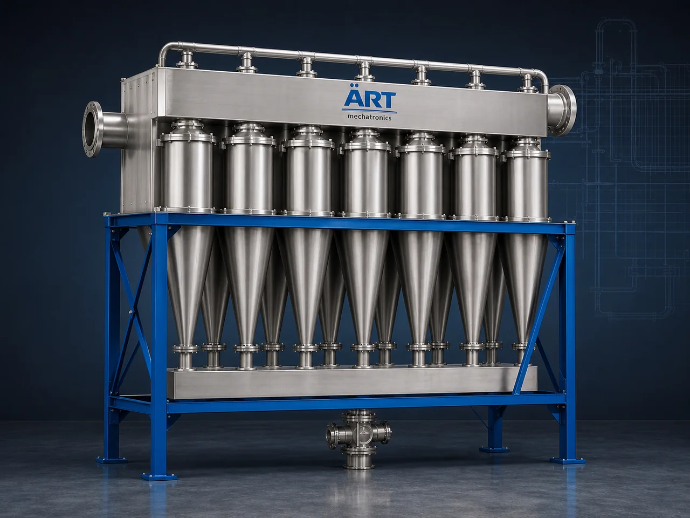

Multi Cyclone Dust Collector Machine (Multiclone Separator for High-Efficiency Dust Separation)
A Multi Cyclone Dust Collector Machine, also known as a Multiclone Separator or Multi Cyclone Dust Collector, is an advanced dust separation system that uses multiple small cyclones arranged in parallel to achieve higher efficiency in dust removal compared to single cyclone separators.

About the Multiclone Dust Collector Machine
These systems are widely used in industries where large volumes of dust and particulate matter are generated, especially in boilers, furnaces, cement plants, power plants, metal processing, and heavy industrial applications.
Multi cyclone systems act as an effective pre-cleaner before bag filters or electrostatic precipitators, improving overall system performance and reducing load on downstream filtration equipment.
ART Mechatronics offers high-performance multiclone dust collectors, engineered for high efficiency, durability, and continuous industrial operation.
One machine, many names
Buyers search for this equipment under many terms — we manufacture all of them:
Working Principle of Multi Cyclone Dust Collector
Dust-filled air enters the system through:
Air is distributed into:
Each cyclone works independently
Inside each cyclone:
Separated dust collects in:
Clean air exits through:
Multiple cyclones = higher efficiency than single cyclone
Types of Multi Cyclone Systems
Multi Cyclone Vs Single Cyclone
Feature Single Cyclone Multi Cyclone Efficiency Moderate High Dust Size Coarse Medium to fine Capacity Limited High Application Basic Industrial heavy-duty Usage Standalone Pre-cleaner + main system
Multiclone is used for higher efficiency and larger plants
Industries Using Multi Cyclone Dust Collectors
🏗️ Cement & Construction
- Cement plants
- Fly ash systems
⚗️ Boilers & Power Plants
- Coal-fired boilers
- Thermal power plants
🏭 Steel & Metal Industry
- Furnaces
- Foundries
♻️ Recycling & Waste Processing
- Biomass plants
- Waste-to-energy plants
🍃 Food & Agro Industry
- Grain handling
- Bulk material processing
⚙️ Chemical & Industrial
- Powder handling systems
Features & Advantages
✔ Higher efficiency than single cyclone ✔ Handles large airflow and dust volume ✔ No filter media required ✔ Low maintenance and operational cost ✔ Suitable for high-temperature applications ✔ Reduces load on downstream dust collectors ✔ Durable and heavy-duty construction
Technical Highlights
- Airflow Capacity: High CFM systems
- Efficiency: Higher than standard cyclone
- Construction: Mild Steel / Stainless Steel
- Dust Discharge: Hopper / Rotary Valve
- Design: Multi-tube cyclone arrangement
- Integration: Works with bag filters / ESP
Turnkey Multi Cyclone Solutions
ART Mechatronics offers:
- Complete system design & engineering
- Multiclone sizing and layout
- Integration with dust collection systems
- Installation & commissioning
- After-sales service & AMC
Why Choose Art Mechatronics
- Expertise in industrial dust separation systems
- Customized multiclone design for each plant
- High-efficiency and robust systems
- Low maintenance and long service life
- Proven performance in heavy industries
Applications
- Cement Plants
- Boiler & Furnace Systems
- Power Plants
- Steel & Foundry Units
- Biomass & Waste Plants
- Industrial Processing Units
Get pricing & specs for the Multiclone Dust Collector Machine
Share the product, target capacity, current process and plant location. These details help our engineers discuss the right machine or line configuration.
One partner, from design to start-up
ART Mechatronics designs, manufactures, installs and commissions your Multiclone Dust Collector Machine solution with regional presence in India, UAE and Thailand.